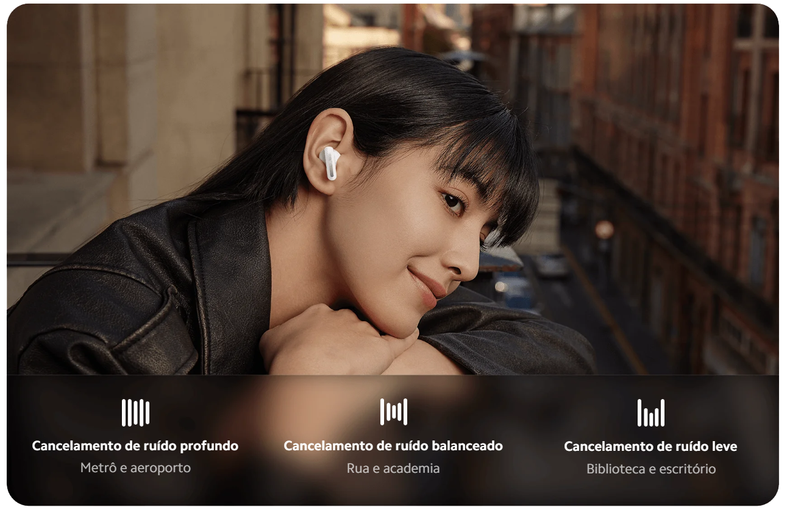
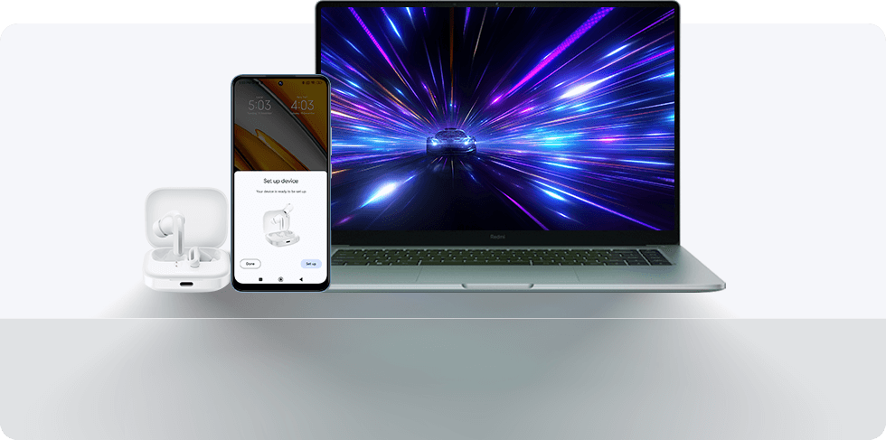
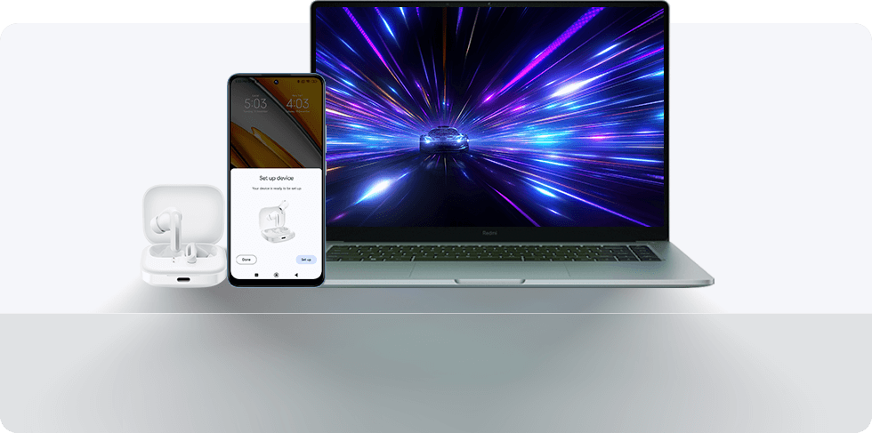
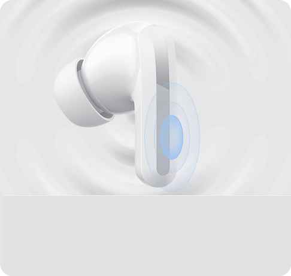
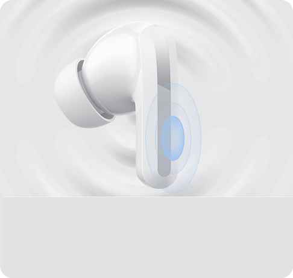

Redmi Buds 5
Nada além do seu ritmo


Cancelamento de ruído extraordinário


Cancelamento de ruído ativo poderoso de até 46 dB
Desligue-se do mundo e ligue-se no seu ritmo
Com uma profundidade de redução de ruído de até 46 dB*, o Redmi Buds 5 reduz eficazmente o ruído de baixa frequência, como em uma cabine de avião ou no metrô. Coloque os fones no ouvido e curta seu espaço pessoal.


Três modos de cancelamento de ruído
Soluções personalizadas para diferentes situações
Encaixe de liberação rápida totalmente novo
Troque de pulseira facilmente

+200 estilosos mostradores de relógio.
Expresse sua individualidade.


Descubra uma variedade de mostradores de relógio únicos e personalizáveis, o estilo e a funcionalidade estão ao seu dispor.
Vida útil da bateria de até 20 dias
Smartwatch de longa duração
Equipado com uma bateria de longa duração e um chip para eficiência energética que otimiza a vida útil da bateria em até 20 dias em uso*. O cabo de carregamento magnético permite que você recarregue com um simples toque, para usar o smartwatch sem preocupações em diversos modos:
10 dias
Tela sempre ativa
30 dias
Economia de bateria
20 dias
Uso padrão*
-25%*
Consumo energético

Chamada telefônica Bluetooth®
Levante o pulso para se comunicar


O Redmi Watch 4 se conecta ao seu smartphone via Bluetooth, permitindo que você veja e rejeite chamadas no seu relógio e participe de conversas com o microfone e alto-falante embutidos, sem a necessidade de tirar seu smartphone do bolso.

Monitoramento preciso
com sensor PPG de 4 canais


Maior precisão de monitoramento
A configuração do sensor PPG* foi atualizada para incluir 4 canais para ajudar a aumentar a precisão do monitoramento de saúde.
Monitoramento inteligente do sono
Com a ajuda de tecnologias científicas e meticulosas de monitoramento do sono, o relógio registra sua condição de sono em tempo real em diferentes estágios, como sono profundo, sono leve e REM, melhorando seus hábitos de sono e qualidade.


Monitoramento de saúde completo
Seu guardião de pulso

Monitoramento da saturação de oxigênio no sangue durante todo o dia*
Envia alertas de vibração quando a saturação de oxigênio no sangue está muito baixa.
Monitoramento da frequência cardíaca ao longo do dia*
Monitoramento contínuo e preciso da frequência cardíaca para proteger sua saúde cardiovascular a todo momento.
Monitoramento de estresse
Exercícios de respiração serão enviados quando seu nível de estresse atingir duas vezes seguidas o valor de 80*.
+ 150 modos esportivos
Todas as atividades que você ama


Uma ampla variedade de modos de esporte, incluindo corrida ao ar livre e interna, caminhada, ciclismo e muito mais. Antes do seu exercício, você pode aquecer* seguindo as imagens de movimento de um treinador virtual e adotar a postura correta para ajudar a evitar lesões.
Posicionamento por satélite independente
Monitore sua rota de exercícios a qualquer momento


Equipado com um chip de localização GNSS, funciona em conjunto com seu smartphone ou de forma autônoma. Cinco sistemas de posicionamento por satélite são suportados para rastrear seus passos com precisão.
5ATM
Resistência à água aprimorada
Com resistência à água 5ATM*, é adequado para 18 esportes aquáticos, permitindo que você aproveite seu tempo na água com facilidade. A função de expelir água automática oferece a máxima conveniência.
 



Aplicativo Mi Fitness
Dados diários de saúde na ponta dos seus dedos
Estatísticas diárias de saúde, como frequência cardíaca, condicionamento e sono, são apresentados em detalhe para fornecer uma informação clara da sua saúde. A sincronização dos dados com o Strava e o Apple Health é fácil e conveniente.
*Os dispositivos não podem ser diretamente vinculados ao aplicativo Strava ou ao Apple Health.
Segurança 24 horas
Em caso de emergências, pressione o botão da coroa três vezes rapidamente para alertar seu contato de emergência*. Sua segurança é sempre a maior prioridade.
 



Avisos legais:
*As imagens desta página são meramente ilustrativas e podem não ser uma representação exata do produto. Os parâmetros do produto são apenas para referência. Alguns parâmetros do produto podem variar devido a fatores externos, como ambiente e diferenças do sistema de smartphone. Consulte o produto real para obter detalhes.
*Os dados de teste de cancelamento de ruído são fornecidos pelo Instituto Nacional de Metrologia da China. O produto atinge 46 dB de profundidade do ANC somente em determinada faixa de frequência. Os resultados reais podem variar de acordo com as condições de uso. Tocar e segurar qualquer um dos fones de ouvido só permite alternar entre os modos ANC e de transparência, por padrão. Configurações de ANC e do modo de transparência disponíveis somente no aplicativo Xiaomi Earbuds.
*O teste de cancelamento de ruído (em relação a ≤6 m/s) foi realizado pelo Instituto Nacional de Metrologia da China. Nº do relatório LSsx2023 -09838.
*Condições de teste de vida útil da bateria e carregamento rápido: Dados de teste de 10 horas com base no Redmi Note 13 Pro 5G (MIUI 14.0.23), dados de teste de 40 horas com base no Xiaomi 12X (MIUI 14.0.4), fones de ouvido versão V3.0.3.7. O nível da bateria dos fones de ouvido estava em 100%, e o volume dos fones de ouvido foi ajustado para 50%. Foi usado o modo de codificação Bluetooth AAC com o recurso ANC, o modo de transparência e a conectividade de dispositivo duplo estavam desligados. Conteúdo do teste: Descarregue totalmente a bateria do Redmi Buds 5 ao reproduzir áudio até que um dos fones de ouvido pare de tocar. Verifique se a porta de carregamento está livre de líquidos e objetos estranhos antes de carregar. Os dados de carregamento e autonomia da bateria dos fones de ouvido derivam dos testes internos realizados pelo fabricante. Os resultados reais podem variar dependendo das atualizações de firmware, das condições de uso, do nível de carregamento e dos fatores ambientais.
*O carregamento rápido de cinco minutos exige que a bateria do estojo de carregamento esteja em 20% ou mais.
*Os usuários do Android 6.0 ou posterior podem acessar este aplicativo no Google Play. Os usuários do iOS 14.0 ou posterior podem acessar este aplicativo na iOS App Store.
*Em todos os dispositivos Android compatíveis que executam o Google Play Services 11.7 ou mais recente, com compatibilidade com o Marshmallow (Android 6.0).
*O Google Fast Pair será desativado por cinco minutos se for cancelado consecutivamente três vezes. Se estiver desativado, aguarde cinco minutos para tentar emparelhar por meio do Google Fast Pair.
*A conectividade de dispositivo duplo está desativada como padrão, a experiência pode variar dependendo do dispositivo. Faça o download do aplicativo Xiaomi Earbuds para ligar. Os aplicativos de terceiros são necessários para oferecer suporte a pausa síncrona ou a continuar ao atender ou encerrar chamadas telefônicas. O nome do recurso pode ser diferente das configurações reais. Para aproveitar a opção de usar dois dispositivos, ative a função usando o aplicativo Xiaomi Earbuds somente em um dispositivo e conecte o segundo dispositivo via Bluetooth.
*Teste de resistência à água e poeira IP54. O produto foi aprovado no teste de Classificação de proteção de gabinete IED60529-2013 (código IP) realizado pelo Dongguan Nore Testing Center Co., Ltd. Os números de relatório de teste IP54 são NTC2309222SV00 e NTC2309224SV00. O resultado do teste mostrou que o produto está em conformidade com a norma IED60529-2013. A classificação IP54 se aplica aos fones de ouvido, não ao estojo de carregamento. Não use seus fones de ouvido em águas quentes. Seus fones de ouvido não podem ser usados durante o banho de imersão ou de chuveiro. Tente evitar usar os fones durante exercícios extenuantes. O suor durante exercícios pode causar danos ao dispositivo. Este produto é à prova de respingos, à prova d’água e à prova de poeira no momento da compra. No entanto, essas propriedades não são permanentes e podem diminuir com o passar do tempo com o desgaste diário. Sua garantia não cobre danos causados ao seu dispositivo por imersão em líquidos.
*A marca e os logotipos Bluetooth® são marcas registradas de propriedade da Bluetooth SIG, Inc. e qualquer uso dessas marcas pela Xiaomi Inc. é feito sob licença. Outras marcas e nomes comerciais pertencem a seus respectivos proprietários.
*As configurações de gestos e a detecção intra-auricular estão disponíveis apenas no aplicativo Xiaomi Earbuds.